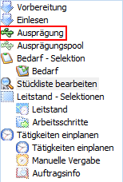
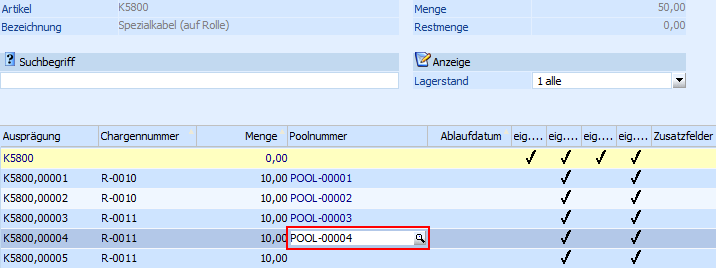
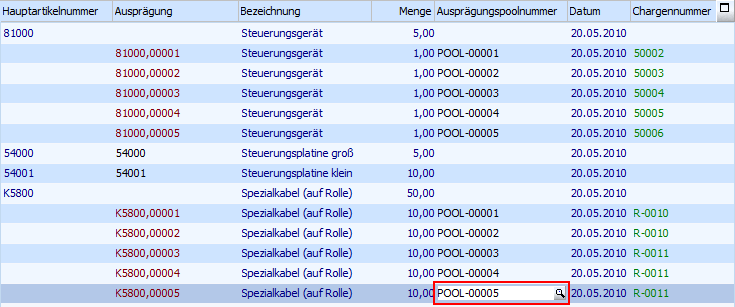
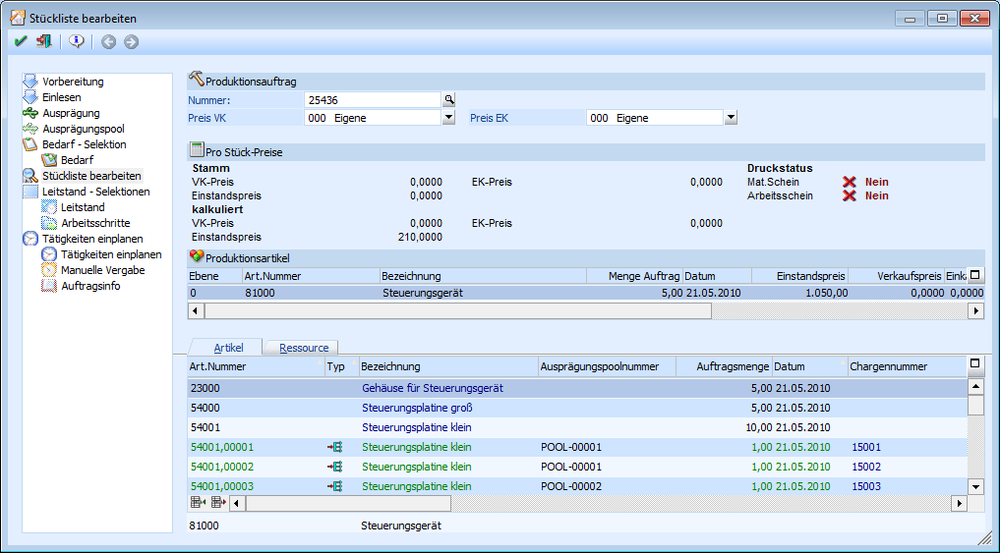
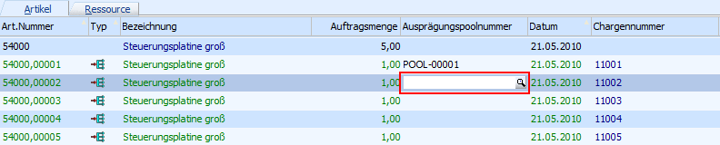
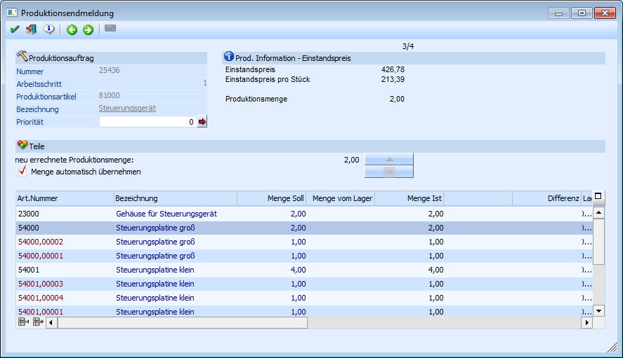

Die Poolnummernzuordnung des Produktionsartikel bzw. der Komponenten kann in verschiedenen Programmen stattfinden.
Achtung:
Es kann den Komponenten erst eine Poolnummer zugeordnet werden, wenn das Ausprägen der Komponente stattgefunden hat.
Poolnummernzuordnung in der Produktionsauftragsanlage - Fenster "Ausprägung"
Das Fenster "Ausprägung" wird automatisch bei der Produktionsauftragsanlage, welche über den Menüpunkt
1 WinLine PPS
1 Produktion
1 Produktionsvorbereitung
erfolgt, geöffnet. Zusätzlich kann das Fenster über den Menüpunkt
1 WinLine PPS
1 Produktion
1 Produktionskorrektur
und im Auswahlbaum auf

erreicht werden.
Im Fenster "Ausprägung" gibt es folgende Zuordnungsmöglichkeiten:
ü Automatisch
Nachdem eine Ident- bzw. Chargenausprägung über den Ausprägungsbutton oder der Taste F6 stattgefunden hat, vergibt das Programm automatisch die Poolnummern.
Dabei wird die erste im extra Ausprägungsfenster erzeugte Ident- bzw. Chargennummer der kleinsten Ausprägungspoolnummer zugeordnet.
ü Manuelle Zuweisung im Ausprägungsfenster
In dem Ausprägungsfenster, welches über den Ausprägungsbutton oder der Taste F6 aufgerufen wird, kann über den Button die erweiterte Ansicht aktiviert werden. In diesem Modus wird die Spalte "Poolnummer" dargestellt und kann individuell gefüllt werden. Dabei steht auch die Matchcodesuche über die Taste F9 (oder dem Lupen-Symbol) zur Verfügung.
Nach dem Abspeichern werden die hier getroffenen Hinterlegungen in die Ausprägungstabelle übernommen.

Achtung
Es dürfen nur Ausprägungspoolnummern hinterlegt werden, welche die WinLine PROD bei der Erzeugung dieses Produktionsauftrags automatisch angelegt hat.
ü Manuelle Zuweisung im Fenster "Ausprägung"
Nachdem eine Ident- bzw. Chargenausprägung über den Ausprägungsbutton oder der Taste F6 stattgefunden hat, werden in der Ausprägungstabelle die Ident- bzw. Chargennummern dargestellt.
An dieser Stelle steht die Spalte "Ausprägungspoolnummer" zur Verfügung und kann individuell gefüllt werden. Die Auswahl der Poolnummer kann auch über die Matchcodesuche (Taste F9 oder dem Lupen-Symbol) erfolgen.

Achtung
Es dürfen nur Ausprägungspoolnummern hinterlegt werden, welche die WinLine PROD bei der Erzeugung dieses Produktionsauftrags automatisch angelegt hat.
Poolnummernzuordnung in der Produktionskorrektur
Die Produktionskorrektur kann über den Menüpunkt
1 WinLine PPS
1 Produktion
1 Produktionskorrektur
erreicht werden.

In der Produktionskorrektur gibt es folgende Zuordnungsmöglichkeiten:
ü Manuelle Zuweisung im Ausprägungsfenster
In dem Ausprägungsfenster, welches über die Anwahl der Auftragsmenge aufgerufen wird, kann über den Button die erweiterte Ansicht aktiviert werden. In diesem Modus wird die Spalte "Poolnummer" dargestellt und kann individuell gefüllt werden. Dabei steht auch die Matchcodesuche über die Taste F9 (oder dem Lupen-Symbol) zur Verfügung.
Nach dem Abspeichern werden die hier getroffenen Hinterlegungen in die Ausprägungstabelle übernommen.
Achtung
Es dürfen nur Ausprägungspoolnummern hinterlegt werden, welche die WinLine PROD bei der Erzeugung dieses Produktionsauftrags automatisch angelegt hat.
ü Manuelle Zuweisung in der Stücklistentabelle
Nachdem eine Ident- bzw. Chargenausprägung stattgefunden hat, werden in der Stücklistentabelle die Ident- bzw. Chargennummern dargestellt.
An dieser Stelle steht die Spalte "Ausprägungspoolnummer" zur Verfügung und kann individuell gefüllt werden. Die Auswahl der Poolnummer kann auch über die Matchcodesuche (Taste F9 oder dem Lupen-Symbol) erfolgen.

Achtung
Es dürfen nur Ausprägungspoolnummern hinterlegt werden, welche die WinLine PROD bei der Erzeugung dieses Produktionsauftrags automatisch angelegt hat.
Poolnummernzuordnung im Ausprägungspool
Der Ausprägungspool kann über den Menüpunkt
1 WinLine PPS
1 Produktion
1 Ausprägungspool
erreicht werden.
Nähere Informationen zur Benutzung dieses Programms entnehmen sie bitte dem Kapitel "Ausprägungspool - Ausprägungspool".
Poolnummernzuordnung in der Produktionsendmeldung
Die Produktionsendmeldung kann über den über den Menüpunkt
1 WinLine PPS
1 Produktion
1 Produktionsendmeldung
erreicht werden.

In der Produktionsendmeldung gibt es folgende Zuordnungsmöglichkeit:
ü Manuelle Zuweisung im Ausprägungsfenster
In dem Ausprägungsfenster, welches über die Anwahl der "Menge Ist" aufgerufen wird, kann über den Button die erweiterte Ansicht aktiviert werden. In diesem Modus wird die Spalte "Poolnummer" dargestellt und kann individuell gefüllt werden. Dabei steht auch die Matchcodesuche über die Taste F9 (oder dem Lupen-Symbol) zur Verfügung.
Nach dem Abspeichern werden die hier getroffenen Hinterlegungen in die Ausprägungstabelle übernommen.
Achtung
Es dürfen nur Ausprägungspoolnummern hinterlegt werden, welche die WinLine PROD bei der Erzeugung dieses Produktionsauftrags automatisch angelegt hat.